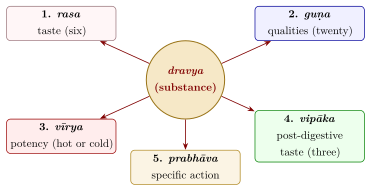
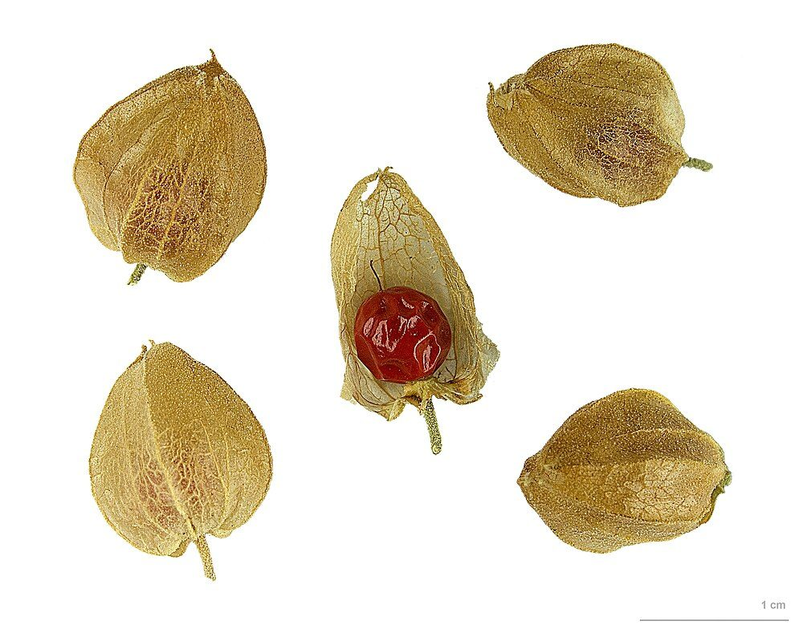
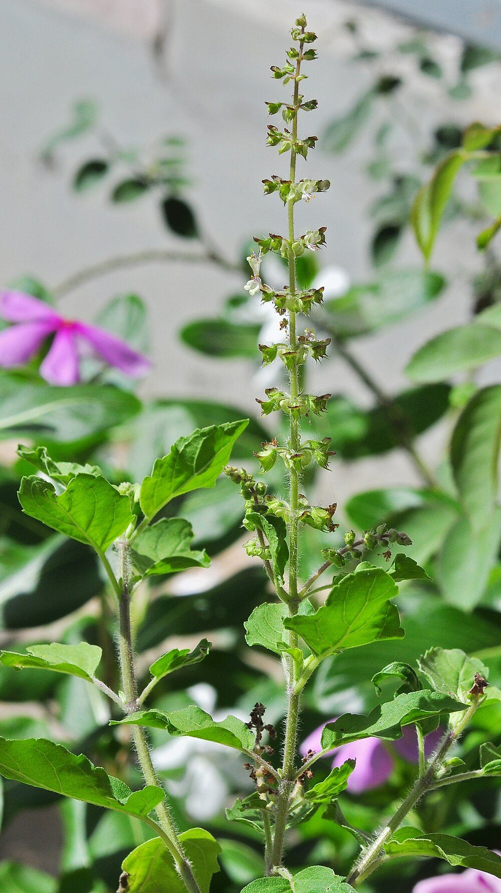

Chapter 6: Dravyaguṇa: Materia Medica and Pharmacy¶
anenopadeśena nānauṣadhibhūtaṃ jagati kiṃcid dravyam upalabhyate
tāṃ tāṃ yuktim arthaṃ ca taṃ tam abhipretya
By this teaching, no substance is found in the world
that is not a medicine, when it is used
with the proper reasoning and for a definite purpose.
— Caraka Saṃhitā, Sūtrasthāna 26.12
6.1 Substances and Their Properties¶
The study of “substances and their qualities” (dravyaguṇa) is the classical Indian science of materia medica. It describes the plants, animal products and minerals used as food and medicine, classifies them, and explains their action on the body in terms of the theory set out in Chapter 2. Caraka states its premise boldly in the passage quoted at the head of this chapter: there is no substance in the world that cannot be used as a medicine. Everything is made of the five elements; everything therefore has qualities that can increase or decrease the qualities of the body.
The number of substances described is very large. The great compendia name several hundred plants; the later lexicons (Chapter 5) list well over a thousand, with many synonyms. A large share of the Indian flora has some use in one or another of the medical traditions, learned or folk.
6.2 The Five Pharmacological Properties¶
The action of a substance is analysed under five headings (Figure 6.1).
6.2.1 Taste (Rasa)¶
Taste is the first property, perceived directly by the tongue. There are six tastes—sweet, sour, salty, pungent, bitter and astringent—each predominantly composed of two elements (Table 3.3, Chapter 3). Taste is the physician’s chief clue to a substance’s nature and action. Sweet substances are nourishing and increase kapha; sour substances stimulate appetite and increase pitta; salty substances soften and moisten; pungent substances stimulate digestion and dry up kapha; bitter substances are cooling and reduce pitta and kapha; and astringent substances are binding and drying.

Caraka also describes the effects of each taste in excess (Ca.Sū. 26). Too much sweet food causes obesity, lethargy, heaviness, loss of appetite, swellings, urinary disorders and worms; too much sour, thirst, looseness of the body and inflammation; too much salt, baldness, greying, wrinkles, thirst and skin disease; too much pungent, weakness, fainting, thirst and burning; too much bitter, dryness, emaciation and disorders of vāta; too much astringent, constipation, distension, heart pain and stiffness. The lesson is that no single taste is wholesome by itself, and that a balanced diet contains all six (Table 6.1).
| Taste | Properties in proper use | Effects of excess |
|---|---|---|
| sweet | nourishing, strengthening; pleasing to the senses; good for the young, the old, the wounded and the emaciated | obesity, heaviness, lethargy, swelling, urinary disorders |
| sour | stimulates appetite and digestion; moistens | thirst, looseness, inflammation, burning |
| salt | softening, digestive; removes obstruction | greying, baldness, wrinkles, thirst, skin disease |
| pungent | kindles digestion; dries kapha; clears the channels | weakness, thirst, burning, tremor |
| bitter | cleansing; reduces pitta and kapha; relieves itching and fever | dryness, emaciation, vāta disorders |
| astringent | binding, healing; stops discharge and bleeding | constipation, distension, stiffness |
6.2.2 Qualities (Guṇa)¶
The twenty physical qualities in ten pairs (Table 2.2) describe how a substance acts: heavy or light, cold or hot, unctuous or dry, and so on. The qualities follow the rule of similarity and dissimilarity: heavy substances increase heaviness in the body, light substances decrease it.
6.2.3 Potency (Vīrya)¶
Potency is the property through which a substance acts. Caraka reports a view that there are eight potencies (soft, sharp, heavy, light, unctuous, dry, hot and cold), but the view that prevailed is that there are two: hot (uṣṇa) and cold (śīta). Hot substances increase pitta and reduce vāta and kapha; cold substances do the reverse.
6.2.4 Post-digestive Taste (Vipāka)¶
At the end of digestion, a substance’s taste is transformed. Sweet and salty substances usually become sweet, sour substances remain sour, and pungent, bitter and astringent substances become pungent. The post-digestive taste determines the substance’s effect on the doṣas, the bowels and the reproductive fluid.
6.2.5 How the Properties Relate¶
The five properties do not always agree, and the texts give rules for resolving conflicts. In general, a later property overrides an earlier one when they conflict: post-digestive taste overrides taste, potency overrides post-digestive taste, and specific action overrides all the others. There are many exceptions, which the texts list. Thus most sweet substances are cooling, but the meat of some animals is said to be heating; most sour substances are heating, but the emblic myrobalan is cooling. The commentators discussed these rules at length, and the debates—for instance on whether potency is really two-fold or eight-fold—show a lively tradition of argument within the theory.
6.2.6 Specific Action (Prabhāva)¶
Some effects cannot be explained by the four preceding properties. Caraka’s example is the pair citraka (Plumbago zeylanica) and dantī (Baliospermum montanum): both are pungent in taste and in post-digestive taste and hot in potency, yet dantī is purgative and citraka is not. The difference is due to specific action (Ca.Sū. 26.67–68). Prabhāva served as a catch-all for effects observed in practice that the theory could not account for.
6.3 Classifications of Drugs¶
Substances are classified by origin into those from animals (jaṅgama), plants (audbhida) and the earth (pārthiva). Plants are further divided by habit (trees, shrubs, creepers, herbs) and by the part used (root, bark, heartwood, resin, latex, leaf, flower, fruit, seed).
More important for practice are classifications by action. Caraka’s fifty “great groups” (mahākaṣāya, Ca.Sū. 4; Table 6.2) each list ten drugs with a common effect; Suśruta arranges drugs in thirty-seven groups (gaṇa), each named after its first member and used together in compound formulae (Su.Sū. 38).
| Group | Action | Examples of members |
|---|---|---|
| jīvanīya | life-promoting | jīvantī, medā, kākolī, liquorice |
| lekhanīya | reducing (“scraping”) | mustā, turmeric, vacā |
| dīpanīya | kindling the digestive fire | long pepper, citraka, ginger |
| balya | strengthening | balā, atibalā, aśvagandhā |
| varṇya | improving complexion | sandalwood, uśīra, mañjiṣṭhā |
| kaṇḍūghna | relieving itching | sandalwood, neem, mustard |
| kṛmighna | destroying worms | viḍaṅga, black pepper |
| viṣaghna | countering poison | turmeric, śirīṣa, sindhuvāra |
| stanyajanana | promoting breast milk | rice and certain grasses |
6.3.1 Plants in the Vedas¶
Many plants of the later pharmacopoeia already appear in the Vedic hymns, though their uses there are magical and ritual as much as medical. The Atharvaveda invokes kuṣṭha (Saussurea costus, an aromatic root from the Himalaya) against fever, apāmārga (Achyranthes aspera) against sorcery and disease, arundhatī (a creeper) for healing wounds and fractures, and pippalī as a remedy against “wind-disease”. The plant called soma, pressed in the Vedic sacrifice and praised as a drink of immortality, has never been securely identified, and its identity remains one of the most debated questions in Vedic studies.
6.3.2 Substitution¶
The texts themselves allowed substitution when a drug was unavailable, and later authors drew up lists of approved substitutes (pratinidhi). Bhāvamiśra, for example, lists substitutes for the rare plants of the aṣṭavarga. Substitution was a practical necessity for physicians working far from the Himalaya or the forests where many drugs grew, and it is one reason why the same classical name may refer to different plants in different regions today.
6.3.3 The Problem of Identification¶
Many classical drug names cannot be identified with certainty. The lexicons give numerous synonyms, the same name may designate different plants in different regions, and some drugs of the classical texts had become unavailable by the medieval period. The group of eight “life-promoting” plants known as the aṣṭavarga (jīvaka, ṛṣabhaka, medā, mahāmedā, kākolī, kṣīrakākolī, ṛddhi and vṛddhi) is a well-known example: already in Bhāvamiśra’s time they were said to be rare (see above). The plant called brāhmī is identified as Bacopa monnieri in some regions and as Centella asiatica in others; śaṅkhapuṣpī is applied to several different species. For the historian, these problems mean that modern studies of a “classical” drug may not be studying the plant the classical author meant.
6.4 Some Important Plants¶
The following notes describe a few of the most widely used plants (two are illustrated in Figures 6.2 and 6.3), giving their properties according to the classical system and a brief indication of what modern research has and has not shown. They are not recommendations. Several of these plants have known adverse effects, and commercial products may be adulterated or contaminated.
Herbal Knowledge: Aśvagandhā (Withania somnifera)
Classical properties: bitter and astringent; hot potency; reduces vāta and kapha. Classed as strengthening, rejuvenating and promoting virility.
Modern notes: Small clinical trials have reported effects on stress and sleep, but most are short, of limited quality and often industry-funded. Cases of liver injury associated with aśvagandhā products have been reported from several countries (Björnsson et al. 2020).


Herbal Knowledge: Haridrā, turmeric (Curcuma longa)
Classical properties: bitter and pungent; hot potency. Used in skin diseases, wounds and urinary disorders, and classed as countering poison.
Modern notes: Curcumin, its best-known constituent, has been the subject of thousands of laboratory studies, but it is poorly absorbed and clinical trials have produced inconsistent results; no curcumin product is an established treatment for any disease. Turmeric is a food and is generally safe in culinary amounts; concentrated supplements have been associated with liver injury, and turmeric powder in some markets has been found adulterated with lead compounds.
Herbal Knowledge: Tulasī, holy basil (Ocimum tenuiflorum, syn. O. sanctum)
Classical properties: pungent and bitter; hot potency; reduces vāta and kapha. Used in cough, dyspnoea and fever, and sacred to Viṣṇu.
Modern notes: Laboratory and small clinical studies exist; the evidence is not sufficient to establish therapeutic effects.


Herbal Knowledge: Āmalakī, emblic myrobalan (Phyllanthus emblica)
Classical properties: has five tastes, lacking only salt, with sour predominant; cold potency; sweet post-digestive taste; reduces all three doṣas. One of the three “myrobalans” of triphalā and the chief ingredient of the confection of Cyavana.
Modern notes: The fruit is a rich source of vitamin C and is widely eaten. Claims for rejuvenating effects are not established.
Herbal Knowledge: Guḍūcī (Tinospora cordifolia)
Classical properties: bitter and astringent; hot potency; reduces all three doṣas; called amṛtā, “immortal”. Used especially in fevers and as a rejuvenating drug.
Modern notes: During and after the COVID-19 pandemic, when it was widely promoted as an “immunity booster”, Indian hepatologists published case series of liver injury in people taking guḍūcī products (Nagral et al. 2021). Claims of immune effects in humans have not been substantiated.
Herbal Knowledge: Guggulu (resin of Commiphora wightii)
Classical properties: bitter and pungent; hot potency; “scraping” (lekhana); used in obesity, joint diseases and swellings.
Modern notes: A randomised controlled trial in the United States, published in 2003, found that guggulipid did not lower “bad” (LDL) cholesterol—it raised it slightly—and caused skin rashes in some participants (Szapary et al. 2003). The plant is endangered in the wild through over-tapping.
Herbal Knowledge: Brahmī (Bacopa monnieri; the name is also applied to Centella asiatica)
Classical properties: bitter; cold potency; classed as beneficial to the intellect (medhya).
Modern notes: Some small trials of Bacopa extracts in healthy adults have reported modest effects on memory tests; the evidence is limited, and the products tested differ widely.
Herbal Knowledge: Śatāvarī (Asparagus racemosus)
Classical properties: sweet and bitter; cold potency; reduces vāta and pitta. Classed as nourishing, rejuvenating, promoting virility and breast milk; one of the most important drugs in the texts’ treatment of women.
Modern notes: Widely sold as a “women’s tonic” and galactagogue. Clinical evidence for these uses is weak, and safety in pregnancy and breastfeeding has not been established.
Herbal Knowledge: Arjuna (Terminalia arjuna)
Classical properties: astringent; cold potency. In the compendia the bark is used chiefly for wounds, fractures and bleeding; its use as a “heart tonic” is emphasised in later works, notably in Cakrapāṇidatta’s formulary.
Modern notes: Some small trials have studied it in heart disease. It is not a substitute for proven treatments, and it may interact with cardiac drugs.
Herbal Knowledge: Pippalī, long pepper (Piper longum)
Classical properties: pungent; potency described as neither hot nor cold (anuṣṇaśīta), and post-digestive taste sweet; reduces vāta and kapha. One of the three pungents (trikaṭu) and a classical rejuvenating drug, taken in an increasing and then decreasing course.
Modern notes: Contains piperine (see below). Large quantities irritate the stomach.
Herbal Knowledge: Nimba, neem (Azadirachta indica)
Classical properties: bitter; cold potency; reduces pitta and kapha. Used for skin diseases, wounds, fevers and worms, and as a tooth-cleaning twig.
Modern notes: Neem extracts have insecticidal properties and are used in agriculture. Neem oil taken by mouth has caused severe and sometimes fatal poisoning in infants and young children.
Herbal Knowledge: Yaṣṭīmadhu, liquorice (Glycyrrhiza glabra)
Classical properties: sweet; cold potency; reduces vāta and pitta. One of the four “intellect-promoting” drugs in Caraka’s list, used for cough, hoarseness, wounds and ulcers, and as a vehicle in many formulae.
Modern notes: Liquorice root contains glycyrrhizin, which in substantial amounts causes salt and water retention, raised blood pressure and loss of potassium; regular use is unsafe for people with heart disease, hypertension or kidney disease and in pregnancy.
Herbal Knowledge: Vacā, sweet flag (Acorus calamus)
Classical properties: pungent and bitter; hot potency; an emetic and a drug for the voice, the intellect and disorders of the mind.
Modern notes: Some varieties of the plant contain \(\beta\)-asarone, which has caused cancer in laboratory animals; regulators in several countries restrict or prohibit its use in food and medicines.
Herbal Knowledge: Triphalā, the three myrobalans
Classical properties: a combination of the fruits of harītakī, bibhītakī and āmalakī, regarded as balancing all three doṣas; used as a mild laxative, an eye wash and a rejuvenating drug.
Modern notes: It has a laxative effect; claims of wider benefits are largely based on laboratory studies.
6.4.1 A Short List of Classical Drug Plants¶
Table 6.3 lists some of the plants most often named in the classical texts, with their usual modern identification and the part chiefly used. It is given for reference in reading the texts, not as a guide to treatment. Several identifications are disputed, and several of the plants are toxic.
| Sanskrit name | Usual identification | Part used; notes |
|---|---|---|
| harītakī | Terminalia chebula | fruit; one of the three myrobalans |
| bibhītakī | Terminalia bellirica | fruit; one of the three myrobalans |
| āmalakī | Phyllanthus emblica | fruit; one of the three myrobalans |
| pippalī | Piper longum (long pepper) | fruit and root |
| marica | Piper nigrum (black pepper) | fruit |
| śuṇṭhī | Zingiber officinale (ginger) | dried rhizome |
| haridrā | Curcuma longa (turmeric) | rhizome |
| nimba | Azadirachta indica (neem) | bark, leaf; neem oil is poisonous to small children |
| guḍūcī | Tinospora cordifolia | stem; liver injury reported |
| aśvagandhā | Withania somnifera | root; liver injury reported |
| śatāvarī | Asparagus racemosus | root |
| yaṣṭīmadhu | Glycyrrhiza glabra (liquorice) | root; raises blood pressure and lowers potassium in excess |
| arjuna | Terminalia arjuna | bark |
| kuṭaja | Holarrhena pubescens | bark and seed |
| vāsā | Justicia adhatoda | leaf |
| punarnavā | Boerhavia diffusa | root or whole plant |
| bilva | Aegle marmelos (bael) | fruit and root |
| mustā | Cyperus rotundus | tuber |
| vacā | Acorus calamus (sweet flag) | rhizome; some varieties contain the toxic compound \(\beta\)-asarone |
| citraka | Plumbago zeylanica | root; strongly irritant |
| eraṇḍa | Ricinus communis (castor) | seed oil and root; the seeds contain the poison ricin |
| mañjiṣṭhā | Rubia cordifolia | root |
| candana | Santalum album (sandalwood) | heartwood |
| uśīra | Chrysopogon zizanioides (vetiver) | root |
| khadira | Senegalia catechu | heartwood extract |
| kaṭukī | Picrorhiza kurroa | rhizome; threatened in the wild |
| sarpagandhā | Rauvolfia serpentina | root; source of reserpine (Chapter 12) |
| guggulu | Commiphora wightii | gum resin; endangered |
6.4.2 Poisonous Plants in the Pharmacopoeia¶
The classical pharmacopoeia includes a number of highly poisonous plants, grouped as “poisons” (viṣa) and “minor poisons” (upaviṣa). They include vatsanābha (aconite, Aconitum species), dhattūra (Datura), kupīlu (nux vomica, Strychnos nux-vomica), bhallātaka (the marking nut, Semecarpus anacardium), guñjā (Abrus precatorius), karavīra (oleander, Nerium), lāṅgalī (Gloriosa superba) and the latex of arka (Calotropis) and snuhī (Euphorbia). The texts prescribe “purification” (śodhana) of these substances before use.
Health and Safety Note
The plant poisons named here can cause severe poisoning and death, and classical “purification” does not reliably remove their toxicity. This book gives no dose, preparation or method of purification for any of them; see Section 12.7.
6.5 Food and Drink¶
For the compendia there is no sharp line between food and medicine: both are substances whose qualities act on the body, and diet is the first instrument of therapy. Caraka’s chapter on food and drink (Ca.Sū. 27) and Vāgbhaṭa’s parallel chapters (AH Sū. 5–6) describe the properties of hundreds of foods, and the treatment of almost every disease begins with what the patient is to eat and to avoid.
Grains and pulses. Rice is the most praised grain, and the texts distinguish many varieties, the red śāli rice being among the best; barley and wheat are also discussed. Green gram (mudga) is the best of pulses; black gram (māṣa) is heavy and nourishing.
Meat. Classical Āyurveda is not vegetarian. Caraka’s list of meats is long and detailed. It sorts animals by their habitat and habits into eight groups—among them the animals that seize their prey, the burrowers, the birds that peck and those that scratch, the deer and birds of the dry country, and the animals of marshes and waters—and the qualities of each meat follow from its habitat. The meat of dry-land (jāṅgala) animals, light and wholesome, is prescribed for wasting diseases, for convalescence and for the weak, while that of marsh and water animals is heavy and increases kapha. Meat soup (māṃsarasa) is the most characteristic of these preparations: it is given to the emaciated and the convalescent, to patients returning to ordinary food after purification (Section 7.5), in “nourishing” enemas (Section 7.3.3) and in the treatment of consumption. Francis Zimmermann’s The Jungle and the Aroma of Meats takes its title from this dietetics. The healthiest landscape is the dry, open jāṅgala, its antelopes and birds give the most wholesome meat, and food is graded by the qualities of the land it comes from (Zimmermann 1987). The meat of the cow is described as fit for those with strong digestion and as useful in some vāta disorders. The Jain medical tradition and much later Hindu practice rejected meat, and modern Āyurvedic writing often presents the tradition as vegetarian, but that is not what the classical texts teach.
Milk and its products. Milk, curd, buttermilk, butter and ghee are described in detail, with the milk of cows, buffaloes, goats, sheep, camels, elephants and human beings distinguished.
Ghee and honey. Ghee receives special praise. Caraka calls it the best of the fats, values its capacity to take on the properties of drugs cooked with it, and describes it as promoting memory, intelligence, digestive fire, semen and ojas, as counteracting vāta and pitta and poison, and as improved by age, so that ghee kept for years acquires special virtues. Honey is described as astringent and sweet, cooling, scraping and good for kapha, and is distinguished into several kinds according to the bees that produce it; it is not to be heated or taken hot. Both serve as vehicles for many drugs.
Water and drinks. The texts distinguish rain water, river water and water from wells, tanks and springs, and recommend boiled water in many conditions (on Suśruta’s methods of purifying water, see Chapter 4). Alcoholic drinks of many kinds are described; Caraka praises wine taken in moderation, with food and by suitable persons, but describes at length the disorders caused by drinking to excess (Ca.Ci. 24).
Rules of eating. One should eat warm, unctuous food, in proper quantity, after the previous meal has been digested, without incompatible combinations, in a pleasant place, neither too fast nor too slowly, without talking or laughing, and with attention (Ca.Vi. 1). The rules of incompatibility (Section 3.3) go further and forbid particular combinations, such as milk with fish, on grounds that the texts derive from the qualities of the foods rather than from any recorded experience of harm.
6.5.1 Diet in Practice and the Culinary Literature¶
The compendia treat diet as a matter of judgement, to be adjusted to the eater, the season and the place. The eight determinants of the effect of food in the Vimānasthāna (Table 3.4)—the nature of the food, its preparation, combination and quantity, the place, the time, the rules of eating and the eater himself—make the point that no food is good or bad in itself, and the doctrine of habituation (sātmya) allows one person to keep foods that would harm another. The regimen for each season (Table 2.10) is above all a diet, and the treatment of a disease usually begins with one: thin gruels in fever, buttermilk in disorders of digestion, meat soups in wasting.
The same knowledge appears outside the medical texts, in a Sanskrit literature on food that joins recipes to the physician’s theory of qualities. The encyclopaedia Mānasollāsa of the Cālukya king Someśvara III (1131) contains a long section on the pleasures of the table, with recipes for rice, pulses, meats and sweets. Later works devoted to food, such as the Bhojanakutūhala of Raghunātha (17th century), describe dishes together with their effects on the doṣas and draw on the medical lexicons. In these works the cook and the physician speak the same language, and a dish is described by its taste, its heaviness or lightness and its heating or cooling effect. K. T. Achaya’s history of Indian food draws on both literatures (Achaya 1994).
6.6 Animal and Mineral Substances¶
Animal products in the classical pharmacopoeia include milk and its products, honey, beeswax, fats and marrow, bile, musk, horn, shell, coral and pearl, and the urine of several animals. Caraka lists eight kinds of urine—of sheep, goats, cows, buffaloes, elephants, camels, horses and donkeys—for use mainly in purgation and in external applications (Ca.Sū. 1). Claims made today for the therapeutic value of cow’s urine have no reliable scientific support. The use of animal products also raises questions of supply, hygiene and, for some substances such as musk, the protection of endangered species.
Some animal products were prized and costly: musk from the musk deer, gorocanā (a concretion from the gall bladder of cattle, used as a pigment and medicine), civet, ambergris (known through Arab trade), lac, pearls and coral. The trade in some of these, such as musk and the products of endangered wild animals, is now illegal under Indian and international law, and their use in traditional medicine is a conservation problem.
Mineral substances in the older compendia include salts—among them rock salt (saindhava), sea salt and black salt—alkalis prepared from the ashes of plants, red ochre, collyrium minerals, mineral pitch (śilājatu) and some metals. In the medieval period the range of mineral and metallic substances expanded enormously with the growth of rasaśāstra (Chapter 9).
6.7 Compound Formulations¶
Classical treatment relies chiefly on compound formulae (yoga) of several or many ingredients. A few are household names in India. Table 6.4 gives their chief ingredients; it is not a guide to their use, and the products sold under these names today may differ from the classical recipes.
| Formula | Principal ingredients |
|---|---|
| Triphalā | the three myrobalans: harītakī, bibhītakī, āmalakī |
| Trikaṭu | the three pungents: dry ginger, long pepper, black pepper |
| Daśamūla | the roots of ten plants (five trees and five herbs) |
| Cyavanaprāśa | āmalakī with some forty other herbs, cooked in ghee and sesame oil with sugar and honey |
| Brāhmī ghṛta | ghee processed with brāhmī and other herbs |
| Yogarāja guggulu, Kāñcanāra guggulu | guggulu resin with various herbs |
| Ārogyavardhinī vaṭī | a “herbo-mineral” pill containing processed mercury and sulphur, iron, copper and mica, with kaṭukī and other herbs |
The history of cyavanaprāśa illustrates how a classical formula became a modern product. Its name recalls the sage Cyavana, whose rejuvenation by the Aśvins is told already in the Vedic Śatapatha Brāhmaṇa: the aged sage, married to the young princess Sukanyā, is restored to youth after bathing in a pool to which the divine physicians lead him. Caraka’s recipe (Ca.Ci. 1.1) makes the confection from the emblic myrobalan with some forty other herbs, ghee, oil, honey and sugar. In the twentieth century it became the best-known Ayurvedic product in India, sold by many companies in versions that differ from one another and from the classical recipe. Most contain a large proportion of sugar. Claims for its effects on immunity and longevity are not supported by good evidence.
The last item in Table 6.4 illustrates an important point: many formulae in daily use contain metals and minerals, and the line between “herbal” Āyurveda and the metallic pharmacy of rasaśāstra (Chapter 9) is not sharp.
Health and Safety Note
Products containing processed mercury, lead, arsenic, copper or other metals are sold widely as Ayurvedic medicines, and heavy-metal contamination has been found even in products not made by rasaśāstra methods. The evidence is set out in Chapter 9, and practical advice in Section 12.7.
6.8 Pharmaceutical Forms (Kalpanā)¶
Caraka names five basic ways of preparing a drug (pañcavidha kaṣāyakalpanā, Ca.Sū. 4.7; see also Table 6.5): the expressed juice of the fresh plant (svarasa), a paste made by grinding it (kalka), a decoction (śṛta or kvātha), a cold infusion (śīta or hima) and a hot infusion (phāṇṭa). Each is “lighter” than the one before. Later works, especially Śārṅgadhara’s, describe many more: powders (cūrṇa), pills (vaṭī, guṭikā), confections (avaleha), medicated ghee (ghṛta) and oil (taila) made by long cooking of a fat with a paste and a liquid, and self-fermented preparations (āsava and ariṣṭa), which contain alcohol produced by fermentation. Preparations of metals and minerals—“ashes” (bhasma) and others—are the subject of rasaśāstra.
| Form | Description |
|---|---|
| svarasa | juice expressed from the fresh plant |
| kalka | paste made by grinding fresh or dried drugs |
| kvātha or śṛta | decoction made by boiling and reducing |
| hima or śīta | cold infusion, the drug steeped overnight |
| phāṇṭa | hot infusion |
| cūrṇa | powder |
| vaṭī, guṭikā | pill or tablet |
| avaleha, lehya | confection or electuary, made with sugar or jaggery |
| ghṛta, taila | ghee or oil cooked with a drug paste and a liquid |
| āsava, ariṣṭa | fermented preparations, made respectively without and with prior boiling; they contain alcohol |
| bhasma, piṣṭi | calcined metals and minerals; finely ground gems and shells (Chapter 9) |
Medicated oils and ghees were prepared by long, slow cooking in which water was gradually driven off, and the texts distinguish degrees of cooking—soft, medium and hard—by the consistency of the drug paste, each suited to a different use. The fermented preparations were made in sealed vessels left for a fixed period, and contain self-generated alcohol, sometimes in substantial amounts. Modern commercial āsavas and ariṣṭas are regulated as medicines, but their alcohol content can be significant, which matters for children, pregnant women, people who avoid alcohol for religious or medical reasons, and people with alcohol dependence.
The texts give careful attention to the vehicle (anupāna) with which a medicine is taken—water, milk, honey, ghee or a decoction—and to the time of taking it, arguing that the vehicle carries the drug and modifies its effect. A related concept is the yogavāhin, a substance such as honey or long pepper that takes on and enhances the properties of whatever it is combined with. Modern pharmacologists have shown that piperine, a constituent of black and long pepper, increases the absorption of some other compounds, including curcumin (Shoba et al. 1998). This is an interesting convergence, but it does not validate the classical rules of combination in general.
6.9 From Dispensary to Factory¶
For most of its history Āyurvedic medicine was made by the physician or under his eye. Caraka’s house of treatment (Chapter 3) has its store of drugs, implements and assistants. The physician gathered or bought the raw materials, prepared the decoctions, powders, ghees and oils, and gave them to the patient with instructions on the vehicle and the diet. Raw drugs came from collectors and from the druggists of the market—the gāndhika or dealer in fragrant substances of the Sanskrit texts, the pansārī and the ʿaṭṭār of later times—whose knowledge of names, grades and substitutes mattered as much as the physician’s. Caraka acknowledges that goatherds, shepherds, cowherds and forest-dwellers know plants by name and appearance, but holds that only one who knows how to use them deserves to be called a physician (Ca.Sū. 1). The medieval formularies, from Cakrapāṇidatta’s onwards (Chapter 5), were written for such physician-pharmacists. They give recipes for the physician’s own use, not specifications for products to be sold.
The change came in the late nineteenth century. Physicians in Calcutta began to prepare medicines in quantity and to sell them by post through printed catalogues, and pharmacies founded as businesses manufactured classical formulae in bulk: Dabur in Calcutta (1884), the Arya Vaidya Sala at Kottakkal (1902), Zandu in Bombay (1910) and Baidyanath (1917) were among the best known, with Hamdard (1906) on the Unani side (Chapter 11). Manufacture changed the medicines themselves. Decoctions that the texts require to be prepared fresh gave way to concentrates and tablets; preservatives and new packaging lengthened shelf life; and branded “proprietary” combinations, which no classical text describes, appeared beside the classical formulae. The patient increasingly bought a product rather than receiving a preparation, a shift that Madhulika Banerjee has studied in detail (Banerjee 2009).
The law then turned the texts into standards. Under the Drugs and Cosmetics Act, as extended to the Indian systems in the 1960s, an Ayurvedic drug is defined by reference to formulae described in a list of “authoritative books” attached to the Act: the great compendia, the medieval formularies and a number of later works. A recipe printed in a medieval formulary thus became a legal definition of a medicine. The Ayurvedic Formulary of India, published by the government from the late 1970s, selected formulae from these books and fixed their ingredients and methods of preparation, and the Ayurvedic Pharmacopoeia of India (Section 6.10) set standards for the single drugs.
This arrangement has had consequences that the authors of the texts could not have foreseen. Differences between editions and manuscripts, once matters for commentators, became questions for regulators, who had to decide which version of a recipe was the “classical” one (Section 5.6). The label “classical” can lend the authority of antiquity to preparations containing mercury, lead or arsenic, which are listed in the authoritative books like any other formula. And because proprietary medicines were regulated more loosely, much of the market moved to products that have no classical basis at all. The history of Āyurvedic pharmacy is therefore also part of the history of its texts (Chapter 12).
6.10 Quality, Identity and Adulteration¶
The quality of herbal medicines depends on correct identification, proper collection and processing, and freedom from contamination. The Ayurvedic Pharmacopoeia of India, published by the government in a series of volumes since the late 1980s, gives monographs with botanical identity, microscopic characters and chemical tests for single drugs and some formulations. In the market, however, substitution and adulteration remain common: studies using microscopy, chemical profiling and DNA barcoding have found that many samples sold under a classical name are of a different species, sometimes deliberately substituted with a cheaper plant. Contamination with pesticides, microbes, fungal toxins and heavy metals from soil, water and processing has also been reported. These are problems of the modern supply chain rather than of the classical texts, but they affect anyone who uses the products.
6.11 Indian Drugs in World Trade¶
Many Indian medicinal substances were also articles of long-distance trade. Black pepper, long pepper, ginger, cardamom, cinnamon-like barks, spikenard, costus, sandalwood and the myrobalans were exported to the Mediterranean world in Roman times, and appear in the Greek pharmacology of Dioscorides (first century CE), which also describes an Indian “lycium”—apparently the extract of Berberis called rasāñjana in Sanskrit. Arab and Persian merchants carried Indian drugs westward in the Middle Ages, and the myrobalans became standard remedies in Arabic and medieval European medicine. In the other direction, drugs and plants reached India from the Middle East, Central Asia, China and, after 1500, the Americas: opium, asafoetida, China root, and later tobacco, chilli, cinchona and others. The materia medica of Āyurveda is in part a record of these exchanges.
6.12 Collection and Storage¶
The compendia lay down rules for the collection and storage of drugs (Ca.Ka. 1; Su.Sū. 36). Drugs are to be gathered from good land—neither saline, nor stony, nor near cremation grounds or temples—in the proper season, from healthy plants of full maturity, and stored in clean, dry, protected places. The texts recognise that potency depends on habitat, season and age. Modern pharmacognosy agrees that the content of plant constituents varies with these factors, though it measures and explains the variation differently. The over-collection of medicinal plants from the wild is today a serious threat to several species, including guggulu and some Himalayan plants used in Āyurveda and Tibetan medicine.
Summary
Classical pharmacology explains the action of every substance, food or drug, by five properties—taste, quality, potency, post-digestive taste and specific action—and classifies drugs chiefly by what they do. Its names often cannot be matched securely with modern species, and modern evidence for most of its plants is limited, while several are toxic and some popular ones have been linked to liver injury. Since the late nineteenth century the physician’s own pharmacy has given way to the factory, and the law has turned the recipes of listed classical books into legal definitions of medicines.
Further Reading¶
Sharma’s Hindi Dravyaguṇa-Vijñāna is a standard modern textbook (Sharma 2006). On the evidence and safety of particular remedies see (Szapary et al. 2003; Saper et al. 2004, 2008); on drug development from Ayurvedic sources, Mukherjee and Wahile (Mukherjee and Wahile 2006). On the pharmaceutical industry and its effect on practice, see Banerjee (Banerjee 2009).